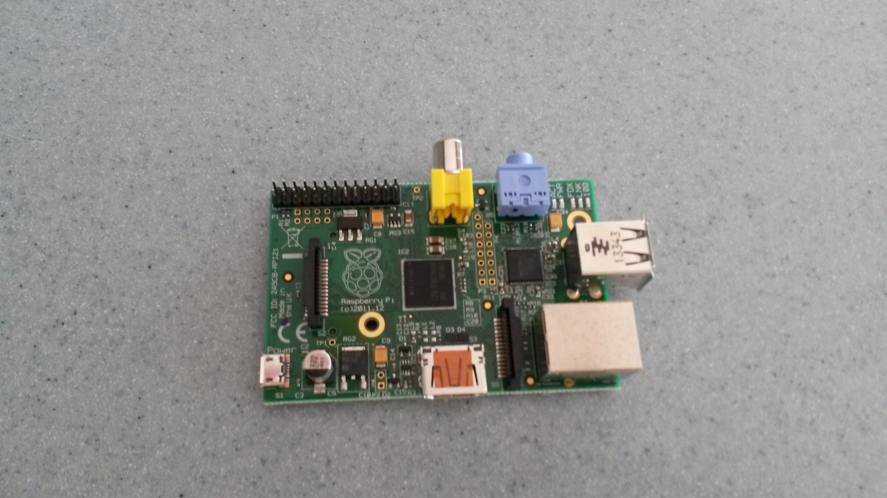
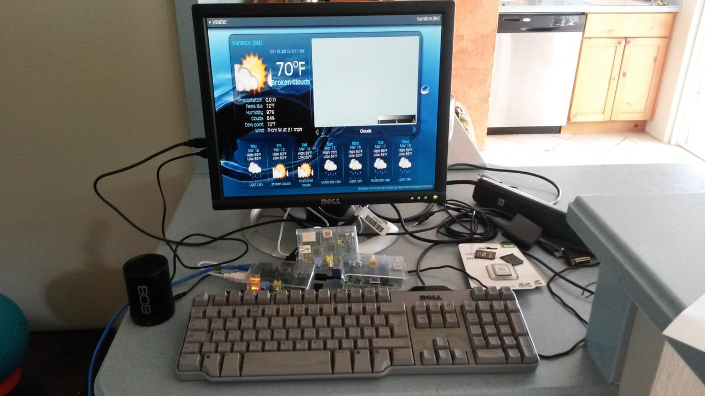

Sixty-seven Minutes
Nelson Mandela Day¶
July 18th is Nelson Mandela's birthday, he would have been 97.
The United Nations calls it Mandela Day, or international day for freedom, justice and democracy. They say:
Every year on 18 July — the day Nelson Mandela was born — the UN joins a call by the Nelson Mandela Foundation to devote 67 minutes of time to helping others, as a way to mark Nelson Mandela International Day.
For 67 years Nelson Mandela devoted his life to the service of humanity — as a human rights lawyer, a prisoner of conscience, an international peacemaker and the first democratically elected president of a free South Africa.
There is more here: http://www.un.org/en/events/mandeladay/
There are a number of events being organised in Bermuda.
It looks like things might kick off early with this event at Bermuda College:
On the Eve of Nelson Mandela Day
Collaboration by:
ADHT, Bermuda College, Chewstick, HRC, Imagine Bermuda
Presents
Another Kind of ‘Happy Hour’
Based @ the Bermuda College Library
FRIDAY, JULY 17TH 5.30 – 7.30 pm
MUSIC……….POETRY………STORY-SHARING
NETWORKING…….NETPLAYING
Meet and Greet,
Even stump your feet,
Although Challenging,
Remember, Life is Sweet!
There are others planning events, I will try to post details here.
I am thinking of going to different events and doing sixty-seven minutes of pi.
Mandela often spoke of Ubuntu:
Ubuntu does not mean that people should not enrich themselves. The question therefore is: Are you going to do so in order to enable the community around you to be able to improve?
Trivia¶
import math
from ipython_doctester import test
# FIXME
# ipython_doctester broken, might be this prob: https://github.com/catherinedevlin/ipython_doctester/pull/5
#@test
def prime(n):
""" Simple primality tester
Examples:
>>> prime(15)
False
>>> prime(67)
True
"""
# Deal with some small numbers
if n <= 2: return True
factor = 2
while factor < math.sqrt(n):
if 0 == (n % factor): return False
factor += 1
return True
# Is 67 prime?
print("Is 67 prime?")
print(prime(67))
# Mandela would have been 97
print("Is 97 prime?")
print(prime(97))
Sixty-seven minutes of $\pi$¶
Angles are measured in different units. Mostly, people seem to use degrees.
A right angle is 90 degrees. The angles in a triangle add up to 180 degrees.
In mathematics it is often useful to use different units, radians.
$\pi$ radians is equal to 180 degrees. So the angles in a triangle add up to 180 degrees.
Now just as there are 60 minutes in an hour, there are also 60 minutes in a degree.
So, 67 minutes of $\pi$ is just 67 minutes from 180 degrees.
$$ x = \pi * 67 / (180 * 60)$$# In python
math.pi * 67 / (180 * 60)
# Now 67 minutes of pi number begins 0.01948.
1948 + 67
So if Mandela had started his campaigning on his birthday in 1948 he would still be at it today.
The UN are just asking you to spend 67 minutes helping others on his birthday.
Future proof your organisation with free software
A few days ago I was hoping to be able to listen to a Bermuda Parliament debate via the Hansard site.
I was actually unable to find a stream for the debates. Further enquiries revealed it does exist, but the streaming uses Microsoft's Silverlight.
This creates a problem, since Microsoft has abandoned Silverlight and it is no longer supported and does not work in many modern browsers.
This is a scenario that gets repeated over and over. In what follows, I will be using government as an example, but you could substitute organisation for government and the story is the same.
So here is a typical scenario:
- Government has a problem to solve, in this case streaming recordings of parliamentary debates.
- Government hires a consultant [1] to implement a solution:
- the consultant chooses the technology stack
- government workers lack time, resources and skills to understand the choices the consultant is making. This problem is exacerbated by outsourcing.
- The Consultant provides a solution with proprietary technologies. In many cases the consultant, not the government owns the software created for the project. The result is the government is locked into that consultant for support and dependent on proprietary software companies for support.
- Proprietary vendor drops support for the tech that was used. Result is unmaintainable websites that eventually have to be replaced. Everything is thrown out and the process is repeated.
In the free software world you get a different story:
- Government has a problem to solve, in this case streaming recordings of parliamentary debates.
- Government IT staff research free software solutions that will solve
the problem
- they look to see what others are using;
- they work with those in other government departments with similar problems;
- they pick some free software projects that solve the problem and that appear to be active and vibrant projects;
- the solution is implemented;
- any software written is released as a free software project.
In this scenario, the end result is something that can be supported not just by the government workers involved in the project, but actually anyone with access to the code, which is in fact everyone.
This includes enthusiasts in the local community, but also people worldwide that are working with the technology that is being used.
Instead of being tied to a single supplier, there is choice and hence a competitive market.
The software will generally be both free as in freedom and free as in cost. The money saved can be invested in developing local talent to support it.
Further money will be saved in the future due to not having to replace the system due to proprietary vendors stopping support. Sure the system will need maintenance and future development, but the government workers will have all the tools they need to do this.
The system will likely require lower cost hardware resource too.
Silverlight and Moonlight
The Silverlight story is an excellent example of this sort of problem.
Microsoft launched Silverlight with a great fanfare, whilst ignoring web standards such as HTML5 that provided very similar capabilities.
It integrated nicely with their .NET platform and they provided some good tools to help with development.
However, Silverlight failed to gain traction and by 2013 Microsoft announced they were discontinuing development, just six years after introducing the technology.
Security and proprietary frameworks
This never ending stream of proprietary technologies, each supposedly better than the previous technology, that is no longer supported, creates serious computer security issues.
Many government websites here in Bermuda use Adobe Flash or Silverlight. The latter is no longer supported, the former has very patchy support.
In any case, government sites using Flash depend on ancient versions that are likely riddled with security holes, yet impossible to support. Further, they simply do not work in modern browsers.
Free software greatly reduces this problem: since the software comes with freedom, those using it have everything they need to support it.
Upgrades are done only as and when significant improvements are made, not on some corporation's timetable, designed to generate revenue for that corporation.
Mono
Silverlight is built on top of Microsoft's .NET framework. .NET is interesting technology, but in many ways not fundamentally different to Java.
The free software community has always been wary of .NET. There is a project called "mono" that is a free implementation of .NET. There were concerns that mono infringes some Microsoft, might use those patents to attack mono.
In fact, this has not happened and recently Microsoft has released a number of .NET related tools as open source, but there is still some wariness about mono. I believe it does have a significant role to play in helping Microsoft shops migrate to free software.
When Silverlight was announced the Mono team started the Moonlight project, a free implementation of silverlight.
The project was abandonned in 2012 after poor adoption of Silverlight and very few sites that use Silverlight work under Moonlight.
The result is that people who used Silverlight are left with an expensive mess.
It is also interesting to read the criticisms of Silverlight in the wikipedia article. Note that many of these criticisms come from companies like Adobe, who were probably more motivated by protecting their ancient Flash technology.
Footnotes
| [1] |
I say consultant but it could be any vendor offering a solution. I don't mean to bash consultants, there are some excellent ones out there, I am planning to be one myself. Consultant's work pattern should be to come to an organisation, empower them to solve their own problem and leave them with all the resources they need to continue to maintain and develop that solution. In short, "get in, solve the problem, empower the organisation, get out". Too often the "empower the organisation" bit is skipped since by not doing that the consultant creates future opportunities for themselves. |
D Bermuda Pi
Bermuda Pi¶
The week 10th to 18th October 2015 there is a lot happening in Bermuda.
-
TEDx Bermuda on 10th October
-
America's Cup racing 16th-18th October
-
The first anniversary of hurricanes Fay and Gonzalo
This creates a good opportunity to run a number of small events around Free Software and Free Culture.
Science, Technology, Engineering and Mathematics STEM is already getting a lot of attention. This is natural in a world where there is so much innovation and change in current times.
Throughout my life technological change has created a lot of wonderful things. At the same time, humanity and social systems are struggling to keep pace with this change.
STEAM adds the Arts into STEM. Making the Bermuda $\pi$ a STEAM powered event seems a natural choice, as the event can then embrace Bermudian culture in general.
At the same time, a hurricane can be viewed as a giant steam engine. Bermuda once ran a steam powered island. How about bringing this to the 21st century: D Bermuda $\pi$, STEAM powered.
Free Culture¶
People in the free software movement have been dealing with this change for some time. They have developed ways of working with technology that not only scale, but also enable people to build systems that evolve naturally over time.
There is a more general Free Culture movement, publishing artistic material under Creative Commons licenses that mirror the free software licenses. Generally, these licenses allow others to build on the ideas and use them in their own work, usually with attribution. Some licenses do not permit commercial use, but many do. Authors choose a license based on their own values.
Weather and hurricanes¶
Given the connection with Fay and Gonzalo some events would focus on hurricane research in the Bermuda context.
Event Ideas¶
A Pi conference¶
- Python
- Raspberry Pi's
- Weather data
- Hurricane simulation
- Damage surveys and damage estimation
- Impact of climate change
- lightning talks
- python and pi's in Bermuda education
Aim for most presentations to be about activities that are going on already in Bermuda, with some visions for future projects.
Invite others from overseas that are doing similar work. Better still, people we are already collaborating with on Bermuda projects.
Focus on the Bermuda context: why is what you are doing a good fit for Bermuda, how can it fit better?
Music, Art¶
Allow local musicians and artists to work and play together. Work on making local artists work freely available on line.
Work on ways technology can complement the arts and vice versa.
Story Telling¶
Have people tell their hurricane stories about last year's storms.
Structure in a way that the stories might inspire new ideas to gather data and do research based on data from previous storms.
- A 5km run over a 3.14 ($\pi$) mile course.
- Pies to eat
- Education, teaching students using raspberry pi
The ideas here are very much inspired by the way python conferences are run
The aim is to have a number of small events, that together make up the Bermuda Pi experience.
Leisure activities¶
Fay and Gonzalo parties would seem a good starter
Music, story-telling, Bermudian food,
Gombeys!
A 5km run over a 3.14 ($\pi$) mile course.
Pies to eat!
Weather¶
Any event during hurricane season has to pay attention to the weather.
Given that one theme of D Bermuda Pi will be hurricane research it
would be unfortunate if the event were hit by a hurricane.
Having said that, it would give the researchers valuable first hand experience.
One project to work on during the week would be getting better estimates of the probability of the event being hit by bad weather.
-
Use long term climate features such as El Nino, the North Atlantic Oscillation, and the Bermuda High to help with contingency planning
-
Develop tools that can help with future event planning
-
Study detailed windfields around the island to better understand the challenges faced by the sailors.
-
Study tides and currents around the island
Murphy's Law is likely to intervene here, so in the meanwhile it would be good if we kept an eye on the long range hurricane forecasts and nearer the time be in a position to work with Bermuda Weather and have plans in place in the event of bad weather.
Sustainablility and environmental impact¶
Renewable Energy¶
Information security and privacy¶
Cryptocurrencies, Bitcoin¶
Bermuda Based Organisations¶
- BIOS station
- Bermuda Weather
- BEST -- sustainablility
- code441
- codtuna
- Pecha Kucha
- Chewstick
- Others?
Coding Sprint¶
Work on free software projects for a better Bermuda.
Reinsurance¶
Many of the reinsurers are using free software and the python language in particular.
It should be possible to have a free software in finance track, perhaps along the lines of the PyData conferences.
Visitors¶
- Free software practitioners and enthusiasts
- Python Foundation
- RedHat
- Canonical/Ubuntu
- Environmentalists
- Meteorologists and climate researchers
Venues¶
This will very much depend on the level of interest
Southampton Princess conference hall, used for TEDx
BIOS station
The BIOS station is close to the airport and close to Paget Island (see below).
Paget Island¶
Paget Island is one of a number of Government run islands. It has basic facilities. It would make an excellent venue for a coding sprint focussing on the environment and sustainability.
Bermuda is an expensive place to visit, some free sofware enthusiasts would be more than happy to come and camp on the island.
One goal would be to make this as inclusive an event as possible, hence creating many different activities that will appeal to different demographics, but also to find ways to mix those people and give them new experiences.
The buildings and infrastructure on Paget Island are in need of some TLC. It would be good to work towards building a place run on renewable energy, environmentally positive where people can come to study how we are doing things in Bermuda.
The philosophy of a camp on the island would be to leave the place better than it is found.
Chewstick¶
Everywhere!¶
Trivia¶
Around the world in 80 days¶
This blog started as a blog for an idea to create an *Around the world in 80 days* idea, to run little competitions where people get miles (or kilometers) for activities. The idea is to see how far round the world you can get in 80 days, with fun twists along the way. One idea was to do an Around Bermuda on Bermuda Bus and Ferry competition. I learnt a lot on the project, but never quite got it out of the door. But that is another story.
There is a version still limping along on heroku: https://tonzone80days.herokuapp.com/
Kudos to heroku. I have a half build project running there, haven't checked it in ages and boom it springs into life.
There are some other pieces coming together that might make the bus thing viable in the near future, just needs a bit of time applied to it.
One thing that I found useful in the project was thinking in an 80 day time horizon. So I was curious about what date is 80 days before 10th October 2015, the date for the start of the Bermuda $\pi$.
Hitting Home on the https://tonzone80days.herokuapp.com/ shows me this:
Jun 29, 2015 is today's date
Sep 17, 2015 is 80 days from today
Apr 10, 2015 was 80 days ago
So time for a little python.
# lets see what python says
import datetime
bermuda_pi_start = datetime.date(2015, 10, 10)
eighty_days_before_start = bermuda_pi_start + datetime.timedelta(days=-80)
print(eighty_days_before_start)
So things need to get started on July 22nd 2015
What's this *Number $-e^{i\pi}$ thing about?¶
There is a wonderful equation in mathematics that links some of the key constants from the world of mathematics.
There is $\pi$, the ratio between a circle's diameter and its circumference. $\pi$ turns up all the time in mathematics.
Then there is e.
Both $\pi$ and $e$ are transcendental, a special type of number, although there are an infinite number of transendental numbers, when they turn up in mathematics they tend to be important.
Then there is 1. The special number that you can multiply any other number by and leave it unchanged.
And there is 0. The special number you can add to anything and leave it unchanged.
The equation is known as Euler's identity:
$$ e^{i\pi} + 1 = 0 $$As this would be the first Bermuda $\pi$ it would:
Bermuda $\pi$ Number 1 = $-e^{i\pi}$¶
Let's make it number one, every year.
Where's de bus
This year's TLF students are considering creating an application to give Bermuda's public transport users up to date information on where the buses and ferries actually are.
Transit authorities that have made this data available have found a number of benefits of bus tracking, including increased usage of public transport.
There is a thriving open source project, One Bus Away which looks like it could be used in the Bermuda environment.
A first step in getting the transport data into the General Transit Feed Specification (GTFS) format. This provides a flexible format for transit data. It is how you specify bus stop locations, routes and timetables. Once you have your data in this format there are a number of projects that you can use to create a powerful transit application.
The One Bus Away project is an open source project that is being used in a number of US and Canadian cities. It should be usable here in Bermuda too.
Google provides good support for transit information and the Netherlands recently became the first country in the world to provide full information via their service.
Whilst this support from Google is good to have, since many tourists will be using google maps whilst visiting the island, there are benefits to being in control of your own data and websites. There are restrictions on the use of Google maps and you are not in control of future development when you use that platform. Further, users may not wish to share their location with Google due to privacy concerns.
OpenStreetMap is an free and open project to make top quality digital maps available. The Bermuda map is quite excellent. Further, there is a good open source javascript library, leaflet to create interactive maps using OpenStreetMap data.
A few months back Open Bermuda started work on a Where's de bus project during a hackathon. The challenge at that time was finding out where the actual bus stops were. It is hoped that it will be possible to get this information and full bus and ferry timetables in machine readable form from the Bermuda Transportation Board (BTB).
Given the small size of Bermuda and its transit network it would also be possible to crowd-source the data for a transit application. If live GPS data is not avaialable from BTB an alternative would be to create a mobile application that public transport users could run and use to report bus locations as well as how full the bus currently is.
There are already some open source GPS tracking systems available such as OpenGTS and Traccar that might be usable here.
Sharon Wilson
If you visit Bermuda you will likely end up at Horseshoe Bay at some point during your trip.
This is one of the biggest and busiest of the South Shore beaches. Whenever there is a long weekend things will be happening on Horseshoe Bay, such as the annual Good Friday flying of kites.
From Horseshoe Bay you can walk along the coast, past a number of smaller and quieter beaches and coves. Often you will be able to find a beach to yourself, with pink sands, turquoise water and tropical fish swimming around the reefs.
At the top of the driveway that leads down to Horseshoe Bay you will find Southampton Rangers football and cricket club. On the weekend you might be able to watch some cricket and get some refreshment.
There is also a restaurant, Gulf Stream where you can get a bite to eat.
Less than a couple of hundred yards to the west you will find a small side-road, Turtle Place. This is where local artist Sharon Wilson lives. Her home is also her studio and her gallery.
If she is open for visitors she usually puts out a sandwich board at the end of the road, sometimes with a couple of balloons attached. In that case, you are in luck. She will welcome you to her home and let you discover her art.
I have a copy of a book she produced, here is the cover:

My cat seems to like the book too:

There is a story behind everything she paints. She will tell you some of those stories, but also let you find your own story.
Here is another picture, it has a good story too:

PyCon 2015
I am writing this as I fly back to Bermuda from another wonderful PyCon. This year it was again in Montreal, the same venue as last year. The next two years it will be in Portland, Oregon.
This is just one of the wonders of PyCon, the opportunity to visit vibrant cities with large tech communities.
The conference was bigger than ever, 3000 attendees. My first PyCon was a mere 400 or so attendees. Happily, as the conference has grown in size, it has retained the spirit that makes it a fantastic experience for old and new pythonistas. If anything, it is more welcoming and inclusive as the years pass. The community actively seeks to be inclusive and there were a number of talks and events along this theme.
The community spirit is absolutely fundamental to the success of python. It is one of the main reasons to consider the language. When you are working with python there is a huge community of enthusiastic and dedicated people who are only too happy to share their work and help others.
Below are some of the personal highlights from the conference, but there really is so much going on that what you will read here is just a snapshot of the magic that is PyCon and the python community.
It is also in no particular order.
Satellite data for everyone
Chris Waigl gave an excellent talk on satellite imagery, the freely available data, how to work with it and the python tools that enable that work.
Seeing what others are able to do with data like this inevitably inspires new ideas.
I am planning to take a look at what imagery is available for Bermuda over the period of the hurricanes Fay and Gonzalo that hit the island separated only by six days.
There will definitely be good before and after imagery, with luck there will also be some usable images from the six day period between the storms.
The usual suspects
The python community has some speakers that are very skilled at presenting complex ideas in an entertaining and informative way. They are always worth looking out for. If you are new at PyCon, ask others what talks they are going to, it will help you be in the right room for you.
Oh, and don't panic, pretty much all talks are recorded and available online (youtube seems to have replaced PyVideo here).
This year, for me, it was the three B's: Beazely, Bernhart and Batchelder.
David Beazely live coding
I always enjoy listening to David Beazely. This year he spoke on python concurrency with live coding. I am guessing there were at least 1000 people present. For added kicks and giggles he chose python 3.5.0a3 (I think). The key bit was the 'a', he was doing a live demo with an alpha version of python: what could possibly go wrong? He demonstrated the way the Global Interpreter Lock (GIL) impacts performance of threaded code.
One line that grabbed my attention was that the GIL does not behave like an operating system. The GIL is all about making sure threads don't trample on each other by mangling shared data. In short, within python only one thread can run at a time.
Ned Batchelder names and values
Ned Batchelder spoke on python names and values, a wonderfully clear exposition on how python stores values. I recommend this talk to anyone new to python, it will likely save you a few hours of chasing mysterious bugs.
Gary Bernhardt
Gary Bernhardt followed up his Rise and fall of javascript from last year with a closing keynote motivated by Donald Rumsfeld's known-unknowns speech. He talked about beliefs programmers have, that really have an underlying belief driving them. Discovering that underlying belief is the key to being able to discuss these ideas with others that have differing views. He gave an example along these lines.
Python needs tests because it does not have static typing
I don't need tests because I have types
Gary pointed out that these two statements cannot both be true, unless tests are somehow the same as types and eloquently exposed the underlying beliefs behind these statements.
Not all Python
PyCon is by no means all python.
There were talks on Advanced Git, ethics, inclusivity, freedom, the brokenness of TLS (https).
Not all talks
The Expo Hall where conference sponsors had their booths also served as the breakfast and lunch place. As per last year, I found the Expo Hall a valuable place to spend time.
The vast majority of sponsors booths are run by techies, not marketting droids and they are great place to find others with similar interests.
Meal times give an opportunity to sit at a random table and meet others and share ideas.
MAGIC
I have been interested in the MAGIC center at Rochester Institute of Technology since hearing Remy DeCausemaker speak about it last year.
MAGIC allows students to take a minor in Open Source.
Lightning talks
Lightning talks are always fun, often at the end of the day. Speakers have precisely 5 minutes to talk. If you want to give a talk, just sign up on the board. These are usually over-subscribed.
Poster Sessions
Sunday morning the expo hall switched into a combined jobs fair and poster sessions. The poster sessions were small booths where people created posters relating to projects and ideas they are working on.
You can then wander around and talk to people working on ideas you are also interested in. These complement the talks in that it gives a chance for more detailed discussion with the people running the projects.
Live captioning
Most of the talks had live captioning. This captioning was remarkably good with essentially real time display. It even coped well with speakers that added a bit of French.
Keynotes
Jacob Kaplan-Moss's keynote reflected the focus on inclusivity in the python community. He talked about how programmers are all perceived either to rock or suck. In short we are led to believe that the distribution of programming abilities is essentially an upside down bell-curve.
Jacob pointed out the absurdity of this perception and also its very damaging consequences. The reality is that programming ability, like most attributes, should follow a normal distribution, hence the vast majority of programmers are just average or as Jacob described himself, I am a mediocre programmer.
The python community is full of people who use python in order to get other stuff done in a very wide range of activities. It is widely used in science, finance, education and a plethora of other areas.
As such, you will often hear pythonistas say, "I am not a real programmer". I would include myself in this bracket, despite having spent my entire working career building software of one sort or another. But that software has always been a means to an end.
I believe my reality is closer to being good enough at quite a lot of things and having the capacity to become good enough at anything I am passionate enough about to pursue.
But to get there you have to deal with the little hater. The voice that eats away at you saying, "You suck at this". Many software communities will confirm this belief for you. The python community is trying to be different.
By insisting that all programmers rock we are excluding the vast majority of programmers from that activity. This causes angst for those already pursuing at the activity and dramatically increases the barrier to entry. The result is a smaller, less diverse, less interesting and less effective community.
Thanks Jacob for a truly inspiring talk. Thanks also to the python community for recognising and trying to address this issue.
Sprinting
My flight home was not until Monday evening, so I was able to attend the first day of code sprints.
Once the conference closed on Sunday afternoon, sprint leaders were given a couple of minutes to talk about what they would be working on.
There was then an introductory session organised, primarily aimed at people new to sprinting, but also of great benefit to more experienced sprinters.
There were people giving introductions to git, virtualenv, virtualbox, testing in python, http and more. Each introduction was repeated 3 times in 15 minute sessions. Hence, everyone could listed to three subjects of there choice.
I found this a useful session to fill in some gaps in my knowledge and also to get to know some of the other sprinters.
PyCon videos
If this blog post has sparked your interest in PyCon I would encourage you to watch some videos from the talks. Just go to youtube and search for PyCon 2015. See the schedule if you want to see the full list of talks.
The state of the python
One of the reasons I like to attend PyCon is that you get a very good feel for where the language and community is currently placed, what projects are being widely used, what projects are up and coming and generally where the community is heading.
I have watched PyCon grow and be delighted that it has not lost the excitement and sheer inspiration it always generates.
The community is stronger than ever and making great efforts to be more inclusive and accessible.
Python 3.x
Guido in his keynote spoke again about the challenges of moving to Python 3. Whilst there are still large numbers of projects that have not been ported (Guido quoted only 5,000 out of 55,000 on PyPi), things are actually way better than that.
All of the top 1000 most used projects have been ported. The reality is that if you are starting a new project, python 3.x is a great choice. You will be using projects that are in active development.
If you are maintaining a large body of python 2.x code then that is where things become more challenging. It only takes one critical package that is not ported and you are stuck. Indeed, this is why the process of moving to python 3.x has taken so long, a project cannot be ported until all its dependencies are also ported.
My takeaway from this PyCon was that more than ever people are using and enjoying python 3.x. I think we are moving to a time when new packages will be available under python 3.x and not under python 2.x and this will provide incentive to switch.
Micro Bit
The UK, in a project driven by the BBC is planning to give 1 million school children a Micro Bit computer. These are small raspberry pi like devices. Python will be used as one of the languages to use on the device.
More generally, python is widely used in education. The Python Software Foundation deserves a lot of credit for this, there has been a huge amount of work over many years promoting the language in education and it is reaping rewards.
Summary
Another wonderful conference that has, as always, generated a lot of exciting ideas for me to pursue.
Blades and Sens results correlated?
I have felt for a while that when the Blades win, the Sens also seem to do better. When the Blades lose, the Sens don't do so well.
My guess is this is mostly just perspective, but I follow both teams. Blades, or Sheffield United, are hoping to get a place in the League 1 play-offs. The Sens, or Ottawa Senators, are trying to get into the Stanley Playoffs.
If you'd asked me at the start of the year, I would have thought being about where we are was a distinct possibility. I still felt we might push into the top two. That would get us up to the Championship automatically.
The Sens on the other hand appeared to be going nowhere. Until the inevitable sacking of the coach to be replaced by Dave Cameron, who was the assistant up to that point. And for a while nothing changed, but then a new goalie was brought in, due to injuries. Since then they have been on a run.
The last few games have been just like watching the Blades. The Blades never (well almost never) do it the easy way. So it is always a season of maybe, just waiting for the point where it all unravels.
But this Sens run has been different. They are already way beyond what anyone could have hoped for a few months back. But now they are tantalisingly close to a playoffs, with a team that is playing well and having fun. But like the Blades, they've been doing it the hard way. 3-0 leads disappearing, coming from behind to go on and win in over-time.
Getting some data¶
So, there has been a lot going on and my guess is that anything that might be in the data will be better explained by major changes such as of coaching staff or players.
So first problem, getting the data. I am planning to just get this season's results for both teams and extract the days when they both played, then take a look at how the results lined up.
Yesterday's games¶
The mighty Blades had a key game against local rivals Doncaster. As per usual, they did things the hard way, coming from behind twice to end up winners 3-2.
That is two big wins over local rivals in a matter of days. The Blades are now firmly in the playoff positions, one more win from the last three games might be all that is needed.
Another local side, Chesterfield, are looming large. It feels like they will play a part in the rest of our season. I grew up on the Chesterfield side of Sheffield, almost equidistant from the two grounds.
Meanwhile, the Senators were at home to the Pittsburgh Penguins last night, in what really was a must win game.
It was also fan appreciation night. Within 10 seconds of the start they were 1-0 down. By 5 minutes in they were 2-0 down and by the end of the first period it was 3-0. Oh dear. Sid Crosby on form and the young Sens not firing.
Second period was a different story. Sens put the Penguins under pressure, but nothing finding the net, until 5 minutes from the end of the period. Pageau managed to sneak one in off one of the Penguin's skates.
30 seconds into the third period they got a second. Two minutes from time they equalised and then Mark Stone fired in the winner in overtime.
Now that is what I call a fan appreciation night.
Oh, and Blades and Sens both win on the same night, so that hypothesis is proven ;)
Bermuda 3 Bahamas 0
This afternoon Bermuda were playing Bahamas in a World Cup qualifier.
It was the second leg, but Bermuda, led by Nahki Wells, were already 5-0 win in the Bahamas last Wednesday.
This game hadn't been generally broadcast in Bermuda. But we had seen highlights, and the first many of us knew about the game was via a banner that was put out on the TV station.
As a long suffering supporter of the Mighty Blades I have rarely been in the position of being able to go to a game, already 5-0 up. I have also never been to a World Cup game before.
So today we set off early to the game on the moped. The game was a sell out, parking was likely to be tricky. In any case, the build up to the game would likely be fun.
It was cold. Not Canada cold, but Bermuda cold. Cloudy and damp, windy and looked like it could rain any minute. The rain held off.
The build up to the game was fun too. Many in the crowd knew one or more of the players well. There was excitement that we would see a few goals, and a slight fear that maybe things could unravel. And there were Gombeys :)
Bermuda did dominate the game from start to finish. The goalkeeper, Fredrick Hall, was substited at half-time. I am guessing that he was frozen, as the ball boys had all had a lot more work to do. It was a good time to give his back-up a chance to play, and he at least had some saves to make.
Nahki Wells won a penalty, then crashed the resulting kick against the cross-bar. This was close to half-time, Bermuda had already had 5-6 really good chances, but the ball didn't want to go in the net.
Earlier Wells had been fouled, about 30 yards out and needed treatment from the physio. He was then made to leave the field, and was not able to be there for the free-kick that required the treatment. Broken rules?
Justi Donawa had what looked like a painful injury to his foot, and had to be replaced.
Second half was more of the same, but Bermuda were increasingly getting the feeling that it was going to end 0-0. The players felt it and the crowd too.
Then Nahki Wells broke through and this time made no mistake, 1-0.
From this point every time Bermuda went forward, and that was frequently, they looked like scoring. The game ended 3-0. The Gombey Warriors will play Guatemala, away on the 8th of June, at home on the 16th.
Two last things.
- This is a very young Bermuda team. I heard the average age is just 21.
- The Bahamas also have a young team. They played a good game today, the game flowed, there were lots of entertaining moments. It can't have been easy travelling away already 5-0 down.
It was a great afternoon, two teams, refs and the crowd all played their part. Looking forward to the next games.
Pi Day at Chewstick
This Saturday the date is 3.14.15, March 14th, '15.
March 14th has become known as Pi Day, on account of the fact that the first three digits of the mathematical constant pi.
This year it is extra special, since the next two digits are 15, which corresponds to the year. After that, the next five digits of pi are 9:26:53.
To mark the occasion Chewstick at the new premises on 81 Front St is hosting a Raspberry Pi Day.
A raspberry pi is a $30 computer (Raspberry Pi) that runs off a phone charger. We will be making videos of people performing, playing games etc, so bring your camera, SD card, instruments to contribute your content as we build a Raspberry Pi media centre.
We will also have a retro games console running on a pi.
The plan is to start the event at 9:26:53am and run with it until 9:26:53pm.
I have three working raspberry pi's and some SD cards that can be used to host the operating system.
I have one pi running the Kodi media centre that I hope to add some Chewstick and Bermuda content to. The image below shows Kodi displaying the Bermuda weather.
I have another pi running a retro games console and a third running the Raspian operating system.
There is no need to bring anything but yourself to the event, but if you do have raspberry pi's or related hardware it would be good to bring them along too.
All going well, we will also have actual pies to eat too :)
For more information see this facebook posting.
Bermudaful Day
A couple of weeks back I had my sons and their partners visiting from Canada. They were having difficulty understanding why I am thinking it was so cold here.
I've lived in many places, but including hard Ottawa winters, but never felt as cold as Bermuda the last few weeks. It is all perspective.
We had good times while they were here, below is just one of those days.
Pink and blue limo
We'd decided to go to Spittal Pond. As we are down the west end of the island, that means 2 buses, or the pink and blue limo.
We were in luck, the number 7 bus pulled up just as we reached the stop. A sunny day, so the views along South Shore were spectacular.
We were soon in town and just had a bit of time between buses to look at Victoria Park and the web of ropes holding up trees that have been lifted back up since the hurricanes knocked them over.
Onto the number 1 bus and another beautiful journey. You are higher up on the bus, and see so a lot more. Plus it stops every now and again.
Spittal Pond
I have liked Spittal Pond for a lot of years. It is a place in Bermuda where you can really feel in a natural environment. Spectactular views and lots to explore.
It is also a place that changes through the seasons, so there is always something new to see.
This was the first time I had been since the hurricanes. There wasn't much sign of them on this walk. Just a fiew views that didn't used to exist.
But we were treated to a sunny day without much wind. The ocean always looks better in the sun. It lights up the clarity of the water and the pink sand beneath.
The path leads down to some rocks where in a few places there are actually steps cut out to make it a little easier to clamber over.
At the waters edge there were a couple of large parrot fish, bobbing around as the waves were breaking against the rocks.
Portuguese Rock
We took the little detour up to a rocky cliff overlooking the ocean. Here there is a brass plate that is a cast of an inscription that was found on the rock here. It has the date 1543 and some other marks that have been interpretted as "R. P." standing for Rex Portugaline.
1543 is nearly 70 years before the island was settled, indicating that there is more to the early history of this island than we are every likely to discover.
The farm on McGalls Hill
Once back at the road we decided to walk over the hill, past St Mark's church and down McGall's Hill to the Northrock.
Part way down the hill we stopped to look at a small banana plantation. The farmer, Henry, and his wife, Theresa, were there looking after the land and invited us down.
Henry delighted in telling us just what is invoved in growing bananas. He also showed us onions, giant cloves of garlic and new potatoes.
They had such patience in showing how all the different plants thrived. Henry also told us about the fruit salad tree.
Citrus fruit used to be a big thing in Bermuda. If you visit the island ask an older Bermudian about the citrus and they will tell you Bermuda used to have some of the best citrus fruit you can find.
Henry explained that you can even grow fruit salad trees here: a single tree that grows lemons, limes, oranges and grapefruit, all as a result of grafting buts from different fruits onto a wild lemon base.
All in all, it was a great day.